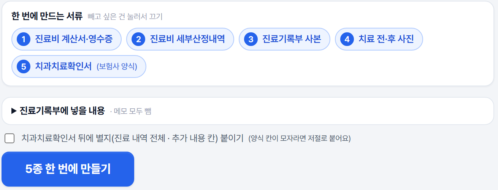

홈 › 치과 보험서류 자동 발급
치과 보험서류 자동 발급 — 실비·치아보험 서류 5종 한 번에
「보험 청구할 서류 주세요」 하시면, 환자를 고르고 [5종 한 번에 만들기]를 누릅니다. 실비·치아보험에 쓰는 계산서·영수증, 세부산정내역, 진료기록부 사본, 치료 전·후 사진, 치과치료확인서가 덴트웹 기록으로 한꺼번에 만들어집니다.
보험마다 필요한 치과 서류
어느 보험사·어떤 보험인지, 보험사 안내문에 무엇이 적혀 있는지부터 여쭤 보는 것이 좋습니다.
| 보험 | 보통 필요한 서류 | 함께 챙길 것 |
|---|---|---|
| 실비(실손보험) | 진료비 계산서·영수증 | 진료비 세부산정내역 |
| 치아보험 | 위 두 가지에 더해 치과치료확인서(보험사 양식) | 치료 전·후 사진을 더 달라는 경우가 많음 |
| 보험사가 따로 요청할 때 | 진료기록부 사본 | 원본과 같아야 하는 서류 |
보장 범위(가입 시기·급여/비급여)는 보험사 약관마다 다릅니다. 청구 가능 여부는 환자분이 보험사에 확인하시도록 안내합니다.

손으로 하면 다섯 번, 데스크알리미는 한 번
전자차트 기본 기능만 쓰면 서류마다 메뉴를 따로 열고, 서류마다 환자와 기간을 다시 골라야 합니다. 치과 데스크알리미는 환자를 한 번 고르고 기간 [1년](또는 [2년]·[첫 진료부터])을 누른 뒤 [5종 한 번에 만들기]를 누르면 다섯 가지가 한꺼번에 미리보기에 나옵니다.
- 막대에서 [서류] → 이름 일부·차트번호·전화 뒷자리로 환자 찾기
- 보험사 고르기(모르면 비워 둬도 됩니다)
- 기간 단추 하나로 모든 서류 기간이 같이 정해집니다
- 치료 전·후 사진은 저절로 골라집니다
- [인쇄] · 파일은 [PDF 저장] · 환자분께는 [이메일로 보내기]

덴트웹 기록 그대로 만듭니다
서류는 덴트웹 진료 기록 그대로 만들어지고, 서류를 만들어도 덴트웹 기록은 바뀌지 않습니다. 이번 청구와 관계없는 서류는 동그라미 번호를 눌러 끄고, 청구할 진료가 들어가는 기간으로 다시 뽑습니다.
서류는 실제 진료 내용과 같아야 합니다. 헷갈리면 원장님께 먼저 여쭤 주세요.
단계별 화면은 보험 서류 5종 한 번에에서 볼 수 있습니다.
자주 묻는 질문
- 치과 보험 청구(실비·치아보험)할 때 치과에서 떼 주는 서류는 뭐예요?
- 실비(실손보험)는 보통 진료비 계산서·영수증과 세부산정내역(세부내역서)이면 돼요. 치아보험은 여기에 치과치료확인서(보험사 양식)·치료 전·후 사진을 더 달라고 하는 경우가 많아요. 진료기록부 사본은 보험사가 따로 요청할 때만 드려요. 그래서 환자분께 "어느 보험사·어떤 보험인지, 보험사 안내문에 뭐라고 적혀 있는지"부터 여쭤 보는 게 좋아요.
- 치과 데스크에서 보험 청구 서류를 한 번에 뽑는 방법이 있나요?
- 전자차트 기본 기능만 쓰면 서류마다 따로 열어 출력해야 해요. 덴트웹을 쓰는 치과라면 데스크알리미의 [5종 한 번에 만들기]로 계산서·영수증, 세부산정내역, 진료기록부 사본, 치료 전·후 사진, 치과치료확인서 가운데 보험사가 달라는 것만 켜서 한 번에 만들 수 있어요.
- 환자가 "1년치 실비 서류 다 주세요" 하면 어떻게 빨리 해요?
- 기간을 최근 1년으로 정해 영수증·세부내역·진료기록부를 한꺼번에 뽑고, 보험사 확인서를 붙이면 돼요. 진료가 많은 환자일수록 서류마다 기간을 다시 넣는 게 시간이 많이 걸려요.
- 실비 서류를 환자에게 PDF나 이메일로 보내도 되나요?
- 요즘은 보험사 앱으로 사진·PDF를 올려 청구하는 분이 많아서, PDF로 드리면 편해요. 다만 환자 정보가 든 서류라 받는 주소를 꼭 한 번 더 확인하고 보내요.
- 보험 서류에 이번 청구와 관계없는 다른 치료가 섞여 나오면 어떻게 해요?
- 차트 기록이나 서류 내용을 고치는 게 아니라, 이번에 청구할 진료가 들어가는 기간으로 다시 뽑는 게 맞아요. 서류는 진료 기록 그대로 나와야 해요.